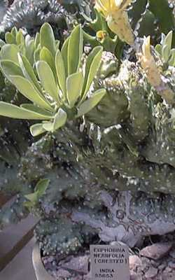

|
ECONOMICALLY
IMPORTANT PLANTS OF INDIA |
| Under-utilized Food and Fodder species and their wild relatives | Contributed by Ms.M.L Annapurna And Dr. Dhanapal, UAS, Bangalore |
Euphorbia neriifolia

Taxonomic Details
----- Correct Name
----- Classification
----- Synonyms
----- Common Names
Other Biological Details
----- Habit and Habitat
----- Diagnostic Features
----- Reproductive Biology
---------- Breeding System
---------- Phenology
---------- Pollinators
---------- Seed Biology
----------Seed Germination
------ Cultivation
----- Major Pests and Diseases
Economic Potential and Uses
----- Parts Used
----- Uses
----- Harvesting Practices
----- Produce and Products
----- Chemistry
----- Processing Techniques
----- Other uses
----- Economic Potential to the
Country
----- Export Potential
Miscellaneous Information
Literature
Correct Name : Euphorbia neriifolia Linn.
Family : Euphorbiaceae
Synonyms : Euphorbia ligularia,
Roxb.;Euphorbia nivulia .
Common Names :
Sanskrit: Sehunda, Patrasnuhi, Snuhi, Svarasana
Hindi: DandaThor, Patton-ki-send,Sehund,
Thohar, Sij
Bengali: Manasasij, Hijdaona, Patashij
Malayalam: Ilakalli, Kalli
Marathi: Dhudli, Kode sabar, Neya-dungra, Niwarung, Nurang, Mingut,
Nevagunda
Tamil: Illaikkalli, Kalli, Manjevi, Nadangi,
Naynakki
Telugu: Aku-jemudu
Kannada: Yelekalli,
HABIT
& HABITAT:
A large branched
shrub or small tree, it is found wild on rocky ground in Central India and also in the boundaries of fields,
Cultivated fields and Plains, forest edges, Gardens and Roadsides, hedges, Hill
forests, Hill slopes, on naked hills, Road sides, Rock crevices, rocky habitats
in plains, Secondary forests and Villages, Waste land and Wild. Cultivated in
neighbourhood of villages in Bengal.
BioticZone: Konkan plain,
North West Himalayas, Peninsular India, Western Ghats
and Western peninsular India,
Misc: Banki block, Bengdaki, Deccan Peninsula, Dhapsa, Jaigarh, Mahaballeshwar, Medshi, meja dam, Mt.Abu, Mumdapur, N. districts, Nartiang,
Neral, Palmi, Pandharkawada-Bhiwkund road, Pithora,
Pusad-Yavatmal road, Rambagh,
Regional Research Station, Brahmavar, Rocky places, Trombay and Varacunda.
Country:
Zone: Central, East, North East, South and Westzone.
State:
District: Agra, Akola, Banswara,
Bhilwara, Bilaspur, Bombay,
Dakshin Kannada, Daman, Damoh,
Hoshangabad, Jaipur, Jhalawar, Jowai, Nagerhaveli, Nimar East, Panna, Pune, Raigad,
Raipur, Satara, Seoni, Sidhi, Sirohi,
Tikamgarh, Udaipur and Yawatmal.
Talluk:
Availability :
BAluchistan, MAlay Islands.
Status :
DIAGNOSTIC
FEATURES
Shrub or small tree with the
pairs of stipular spines on tubercles or swellings of the branchlets. It grow
upto 20 feet, with 12 inches diameter stem. Leaves
obovate. Yellowish involucres 3-7 in a cyme. Oldest involucre , male,
2-bracteate, bearing in the bract axils a 2-sexual involucre. Lobes of
involucres broadly cuneate & fimbriate. Anthers sagittate, apiculate.Style
3-fid, stigmas slightly dilated and minutely toothed.
Breeding System :
Phenology :
There are reports of flowering
during February-April and also during December-April in some other places.
Seed Biology :
Seed Germination:
Cultivation:
MAJOR
PESTS & DISEASES
Pests:
Diseases:
Parts used
Plant,
Leaves
1.The plant is bitter, pungent; laxative, carminative, alexipharmic; improves the appetite; useful in abdominal troubles, bronchitis, tumors, piles, inflammations, enlargement of spleen, anaemia, ulcers, fevers.
2.The leaves are heating, carminative,; improves appetite, good for tumers, pains, inflammations, abdominal swellings. The leaves and tender shoots are used as food.
3.The milky juice is used as purgative and rubefacient; also employed in ear-aced and mixed with soot is employed in ophthalmia.
4.The roots mixed with black pepper, is empl;oyed in cases of snake-bites, both internally and externally.
5.The pulp of the stem mixed with green ginger is given to the persons who have biten by mad dogs before the accession of hydrophobia.
6.The tender terminal portions of the branches are slightly roasted and the juice is then squeezed out and given with molasses for producing vomiting and purging in bronchitis of children.
7.Juice is largely used with clarified or fresh butter as an application to unhealthy ulcers and in scabies. Also employed as an antidote in snake-poisoning.
8.This is sacred to Mansa, the goddess of serpents.
Harvesting Practices
Produce and Products
Gum
Chemistry
It
when subjected to destructive distillation, a distillate was obtained, which had
a very powerful and empyreumatic odour like nicotine.
1.Euphorbia neriifolia Linn., 2000, Kirtikar & Basu's Illustrated Indian Medicinal Plants: Their Usage in Ayurveda & Unani Medicine, Vol. 9, pp.3039-3040.
2.Euphorbia neriifolia- A Dictionary of the Economic products of India, 1889, George Watt, Vol.I, pp.297-298.
3.http://www.desert-tropicals.com/Plants/Euphorbiaceae/Euphorbia_neriifolia.html
5.Sasya
Sahyadri- A CD on Plants of Western Ghats, 2003, K.N. Ganeshaiah.
6.
The wealth
of